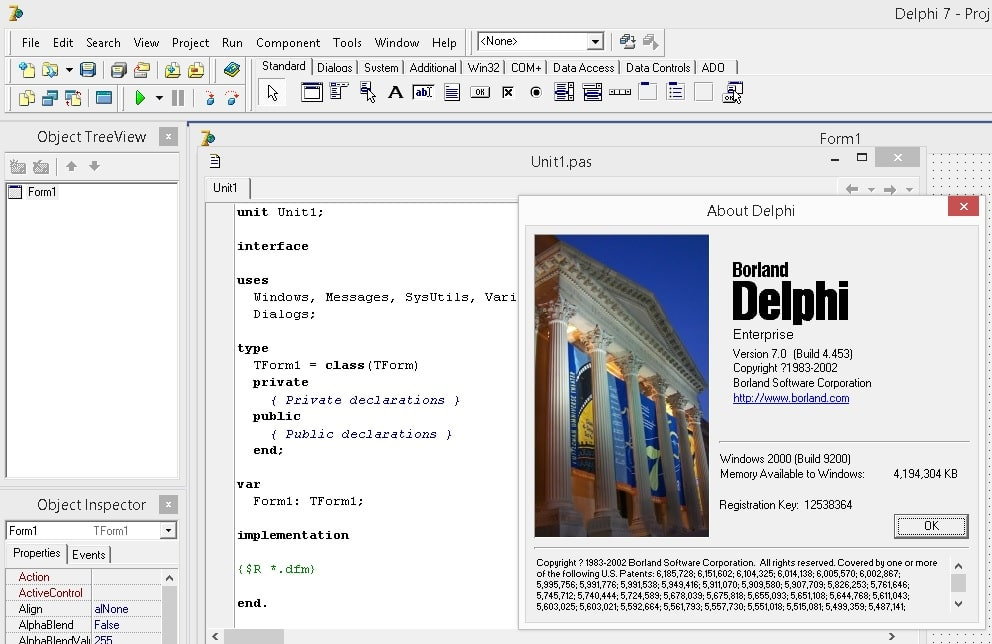
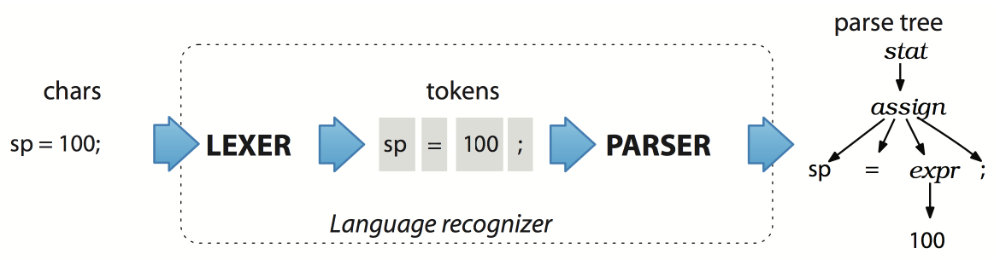
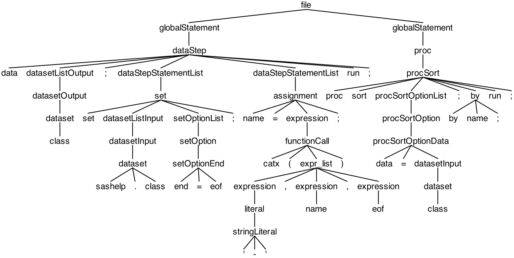

Parsing SAS using ANTLR and several use cases for the outcome
Igor Khorlo
2018-07-05 SUGUKI üìç London
Announcement
SU
GG
SAS User Groups in Europe
The problem
Background – My Story
- Object Pascal (~2003)
- Delphi (Anders Hejlsberg, C#, Typescript)
- IntelliSense / Autocompletion
- Code generation

What basic functionality do you expect from an IDE?
- Autocompletion
- IntelliSense
- Code checking
- Indentation support
Better IDE
Having a good visual response is important. Even Tonny Barr spoke about this – SAS BEGINNINGS
Parsing SAS
What actually SAS language is?
- 9.2? 9.4?
- SAS Base?
- GTL?
- CASL?
What is ANTLR
Generates LL(*) parser. It takes grammar on the input and generates a parser in a target language (originally Java, also python, go, js, ts) on the output, also provides several helpers to walk the parse tree.
How parser generated by ANTLR works

ANTLR Grammar
expr: expr ( '*' | '/' ) expr
| expr ( '+' | '-' ) expr
| INT
| ID
| '(' expr ')’
;
ID : [A-Za-z_][A-Za-z_0-9]* ; // match identifiers
INT : [0-9]+ ; // match integers
NL : '\r'? '\n' ; // newlines
WS : [ \t\r\n\f]+ -> skip ; // skip whitespaceParse Tree for
a + b * (var3 / 2)


Problems faced
%macro test(dsin);
%* Shouldn't the single quotation mark be ignored since comment?;
proc print data=&dsin;
run;
%mend;
data test;
i=1;
run;
%test(test)'t the single quotation mark be ignored since comment?;
proc print data=&dsin;
run;
%mend;
data test;
i=1;
run;
%test(test)Results in:
WARNING 32-169: The quoted string currently being processed has become more than 262 characters long. You may have unbalanced quotation marks.Keywords as Identifiers
if = 1;
then = 2;
else = 3;
end = 4;
if if then
then = else;
else
else = end;
drop = then;data _null_;
if = 1; and = 0;
if if eq and and and eq if then
put 'if = and';
else
put 'if ^= and';
run;Languages compositions
- PROC SQL
- PROC IML
- PROC LUA
- PROC GROOVY
Variety of syntax in general
1 =>: 21 ~ne 21 not <=: 21 ~>=: 2?-y = 2with CHARCODE System Option.
SAS Macro
%let d = dat;
%let end_token_pointer = end_token;
%let end_token = n;
%let if = __if;
%macro __if(c);if &c%mend;
&d.a smthng;
set sashelp.class;
%&if(%str(age > 18))then do;
bmi = weight / height ** 2;
e&&&end_token_pointer..d;
run;SAS Auto-correction
prc freq dta=sashelp.class ordor=freqq;
tble sex / chsq;
runn;WARNING 14-169: Assuming the symbol PROC was misspelled as PRC.What you can do having an AST
Static Code Analyzer – linter for SAS – saslint
$ saslint Inspecting 10 files ...EE.W..N.. Offences: test-errors.sas:3:26: E:22-322: Missing ';' at the end of the assignment statement. f = cat(3, 5, 3 + 5) ^ test-errors.sas:5:25: E:79-322: Missing closing ')'. f = cat(3, 5, 3 + 5; ^ test-warnings.sas:4:9: W: Expression is always true. if length(str) > 0 then do; ^^^^^^^^^^^^^^^ test-notes.sas:7:5: N: This DATA step uses no executable statements and can be replaced by the DATASETS procedure. data class; ^^^^ 10 files inspected, 5 offenses detected.

What is checked?
- Macro call parameters mismatches
- Wrong number of arguments in function calls
- Type mismatches
- Unbalanced quotes
- Unmasked characters in macro quoting functions
- Truncation mistakes
- Spellchecks inside string literals
Dataflow graph
/* ... */
data mess;
set dm ae2 sv;
s = '
data abc;
set a b c;
set d;
ss = ''
data aabbcc;
set aa bb cc;
run;
'';
run;
';
run;
/* ... */
Styleguide Control
DATA CLASS CLASS18;
SET SASHELP.CLASS;
BMI=WEIGHT/HEIGHT**2;
IF AGE > 18 THEN DO; OUTPUT CLASS18; END;
ELSE OUTPUT CLASS;
PROC FREQ DATA = CLASS18;
TABLES BMI;
RUN;data class class18;
set sashelp.class;
bmi = weight / height ** 2;
if age > 18 then do;
output class18;
end;
else do;
output class;
end;
run;
proc freq data = class18;
tables bmi;
run;Transpiling
Language to language compiler.
non-SAS
- Typescript
- Coffescript
SAS
- PROC DS2DS2
- SAS V9 to SAS Viya
- SAS Macro to PROC LUA
The End
Contact info
Igor Khorlo
Comments